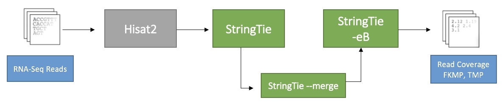

About
We have re-run the analysis that Wang et al, 2014 performed to analyse the difference in gene expression when using Rat Genome 4 (RN4) and the more recent Rat Genome 6 (RN6) and against an updated analysis pipeline.
Gemfibrozil
Gemfibrozil is an oral drug which lowers lipid levels. It is a part of a group of drugs known as fibrates. It interacts with perixisome proliferator-activated receptors (PPARalpha) which results in a PPARalpha-mediated stimulation of fatty acid oxidation and increases lipoprotein liapse (LPL) synthesis.
[Source: Pubchem.ncbi.nih.gov]

Analysis
Original Pipeline

We have analysed Wang et al's Pipeline 5 with the RN4 and RN6. They used TopHat with Bowtie to align the sequences from the Rat livers to Rat Genome 4 from RefSeq. Then Cufflinks was used to assemble the transcripts. Cufflinks was initially run without an annotation genome to find any novel transcripts, then cuffmerge to create a large merged assembly. This merged assembly was then used as the reference genome to estimate isoform and gene- level expression values as Fragments per Kilobase per Million reads (FKPM) normalized.
Updated Pipeline
We then ran a more updated pipeline based on Pertea et al, 2018 using Hisat2 with Stringtie to align, assemble, and estimate abundances for, the sequences from the Rat livers to RN4 and RN6 from RefSeq. The samples – paired end reads were taken by Hisat2 (grey) and mapped to a pre-built index of the RN4 and RN6 genomes. StringTie (green) was then used for assembly with the aid of a RefSeq annotation. Assembled reads were merged and used as a guide for StringTie -eB to calculate abundance estimation. This results were stored in a .gtf annotation file. This gave values for transcript expression levels in FKPM and TPM (Transcripts Per Million).
This website has been made to display our Analysis of Wang et al, 2014, data with our updated pipeline, as part of an MSc Project at the University of Leicester, UK.